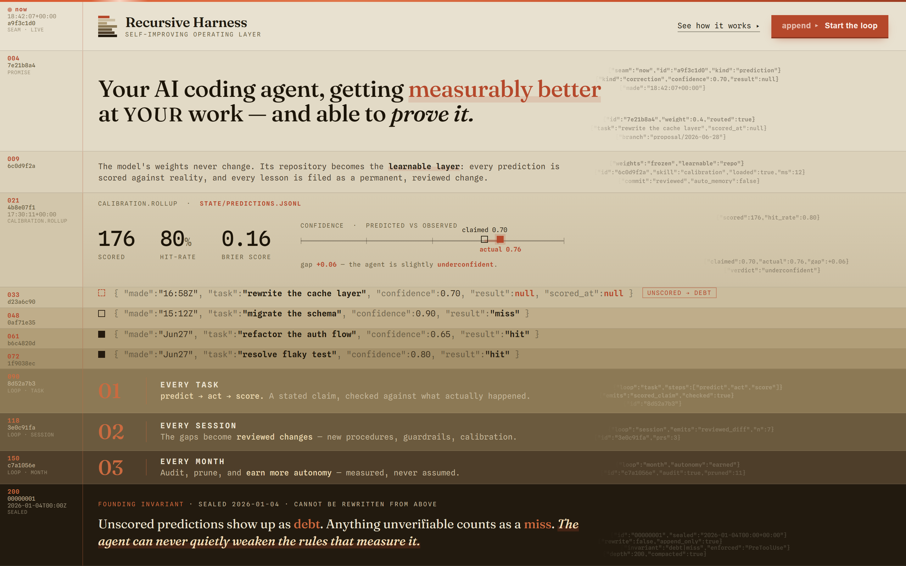

{"direction":"Append-Only Strata","locked":true}
{"weights":"frozen","learnable":"repo"}
{"honest":"by construction","scored":"hit|miss"}
{"second_accent":null,"radius":0}
A ledger you
excavate, not a
brochure you skim.
A self-improving operating layer for an AI coding agent. The model weights are frozen; the repository is the only learnable layer. The system is honest by construction — predictions are scored hit or miss, anything unscored counts as debt, and the agent can never quietly weaken the rules that measure it.
{"widths":[18,27,14,30,22,26,30],"ragged":true}
{"seam":"#B5482B","bedrock":"#150B04"}
{"min":"30px","reduce":"3-band","radius":0}
| y0 | width 18 | #B5482B | ← now seam (oxide) |
| y5 | width 27 | #C8BCA4 | |
| y10 | width 14 | #A28A66 | |
| y15 | width 30 | #7C603E | |
| y20 | width 22 | #553C20 | |
| y25 | width 26 | #321F0F | |
| y30 | width 30 | #150B04 | ← bedrock |
Hard rectangles only — no border-radius, ever. The top bar is always oxide and reads as the live seam; it is the only place oxide appears in the mark. The right edge must stay ragged — never normalise the bar widths to a clean block, that destroys the torn-ledger reading. Never recolour the bands; never add a second accent; never set the mark on a gradient field other than the void or a stratum surface.
{"--oxide":"#B5482B","rationed":4}
{"ink":"one","hierarchy":"pressure"}
{"second_accent":null,"gradient":"depth only"}
0 3px 10px -2px rgba(181,72,43,.55) · prime-text #FBEFE6 on prime-edge #8a3620 · oxide-underline marker-washes .14/.13/.22 · oxide-tint marks .50/.30/.18.Oxide may only mean one of exactly four things: a miss · unscored debt · the live now seam · sealed or destructive states. A second accent colour is forbidden. If a colour is needed and it is not oxide, the answer is a darker stratum or more ink pressure — never a new hue.
{"serif_uses":4,"body":"never serif"}
{"scale":[8,9,9.5,10,11,12,12.5,13,18,21,22,33,34,39]}
{"grain":"the JSONL ledger","editorial":"one note"}
| Role | Specification |
|---|---|
| Wordmark | serif 600 · 22px · -.01em (mono tagline 9.5px / .16em) |
| Display headline | serif 500 · 39px · 1.07 · -.012em |
| Loop index | serif 500 · 34px · --oxide-lit · tabular-nums |
| Bedrock quote | serif 400 · 21px · 1.4 · italic-bold key phrase |
| Stat number | mono 500 · 33px · tabular-nums (% = 18px superscript @ 58%) |
| Body | mono · 12.5px · 1.55 |
| JSONL record | mono · 13px · tabular-nums (base 56% · braces 42% · null oxide) |
| Rail | mono · 9px · 1.32 (depth 9.5px / oxide · hex · ISO ts) |
| Microlabel | mono · 8–9.5px · .12–.2em · uppercase |

Landing page (Append-Only Strata) — this is the brand at full finish, not a mock of it. Every band deposits at the now seam and darkens one countable step down the excavation gradient; the fixed left rail runs record number, 8-char hex id and monotonic ISO-8601 +00:00 timestamps; the real JSONL terminates hard at its natural length to ghost the torn-ledger right edge; the calibration soul widget (scored 176 · hit-rate 80% · Brier 0.16) is the crafted centre; oxide is spent only on the miss, the unscored debt flag, the live seam and the sealed bedrock invariant. The page is the spec.
{"emoji":false,"badges":false,"hype":false}
{"ornament":"▸ only","numbers":"real + tabular"}
seam · live · promise · calibration.rollup · loop · task · loop · session · loop · month · sealedfounding invariant · sealed 2026-01-04 · cannot be rewritten from abovestate/predictions.jsonl · the now seam · the burial line · bedrockHard rules — no emoji. No badges, pills or “✨ NEW” chips. No hype words (“revolutionary”, “supercharge”, “10x”, “magic”). The ▸ is the only ornament permitted, and only as an append / forward tick. Numbers are always tabular and always real. If a claim cannot be scored, it is not made.
{"to_120":"calibration soul widget"}
{"never":"oxide on a second meaning"}
| Fail · slop | Pass · this brand | |
|---|---|---|
| 01 | Inter / Roboto / system font as display | Fraunces serif display + Spline Sans Mono grain — a deliberate, role-bound pairing |
| 02 | Purple / blue “tech” gradient; GitHub-dark #0D1117 + neon glow | The only gradient is the OKLCH excavation ramp (L.900→.160); ground is dug-earth, not deep-space blue |
| 03 | A second accent, or inventing new hues | One accent, #B5482B oxide, rationed to miss / debt / now / sealed; everywhere else paper-and-ink |
| 04 | Rounded cards floating on drop-shadows | radius 0, full-width strata flush to the grid, no content shadow — only the frame mount + seam glow |
| 05 | Emoji icons, decorative SVG, an icon per heading | Zero emoji, zero decorative icons; the only marks are the state tabs and the ruler notch — both load-bearing |
| 06 | Fabricated stats / quote slop to fill space | Every number is a real ledger value (176, 80%, 0.16, +0.06); empty space is held by max-width, not filler |
| 07 | Justified text, clean right column | The ragged right edge is the signature — JSONL terminates hard at its natural length; never tidied |
| 08 | Badges, pills, “NEW ✨”, urgency chips | Plain ledger labels (seam · live, sealed, unscored → debt); the only glyph is ▸ |
| 09 | Scattered micro-interactions, entrance fades | Three motions only, all signalling seam liveness; sediment never fades in |
| 10 | Hero hype copy (“supercharge your workflow”) | Mechanism stated and proven: “scored against reality… a permanent, reviewed change” |
| 11 | Decoration that means nothing | Depth = age, ink-pressure = hierarchy, oxide = one family of states — every visual choice is semantic |
The one detail taken to 120% is the calibration soul widget — claimed-vs-actual with the oxide gap bar. The thing that would most cheapen the brand: aligning the JSONL into a clean right column, or letting oxide leak onto a second meaning.
{"append_only":true,"rewrite":false}
{"invariant":"cannot be rewritten from above"}
Append-only applies to this document too: change it by depositing a new, dated revision — never by quietly overwriting the record.